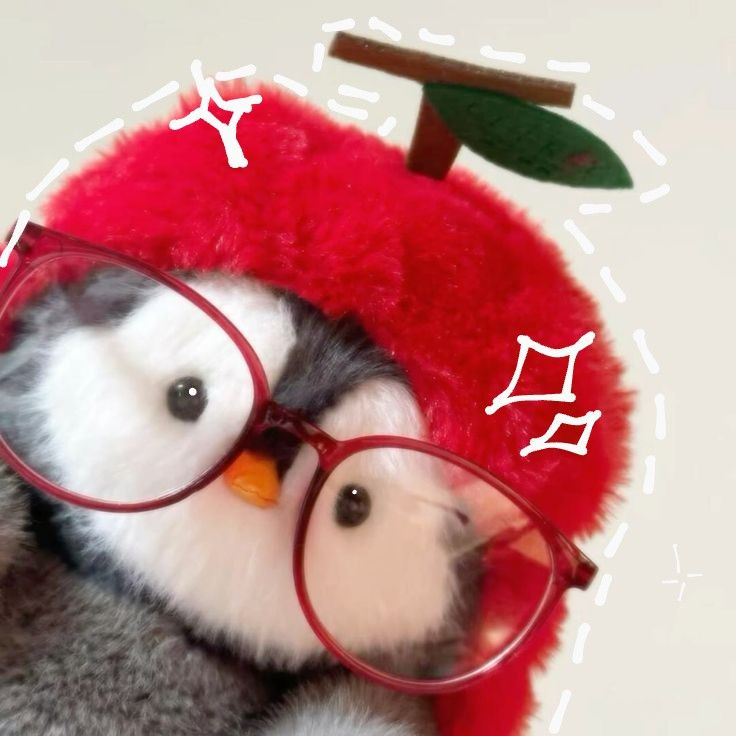
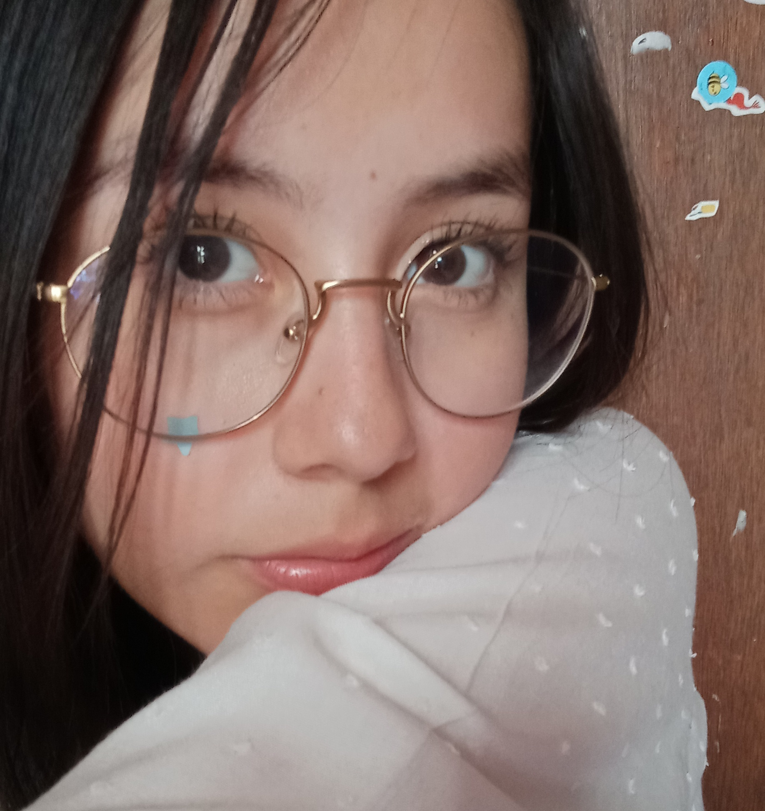
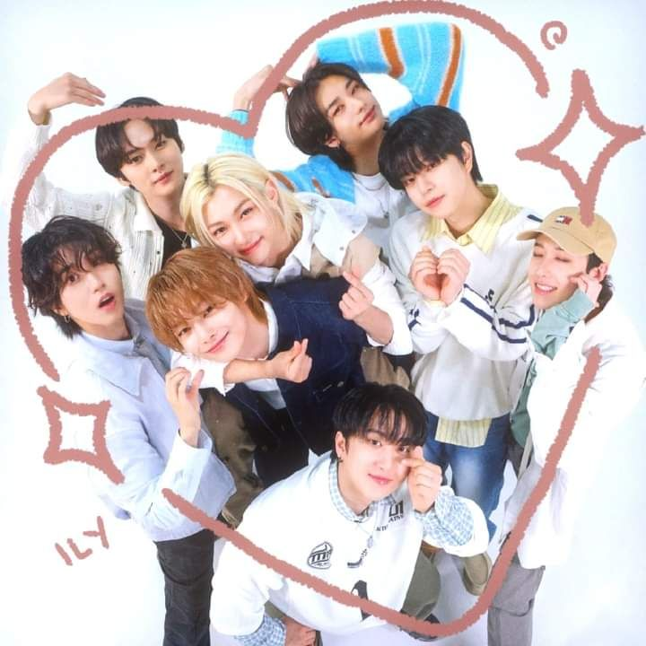
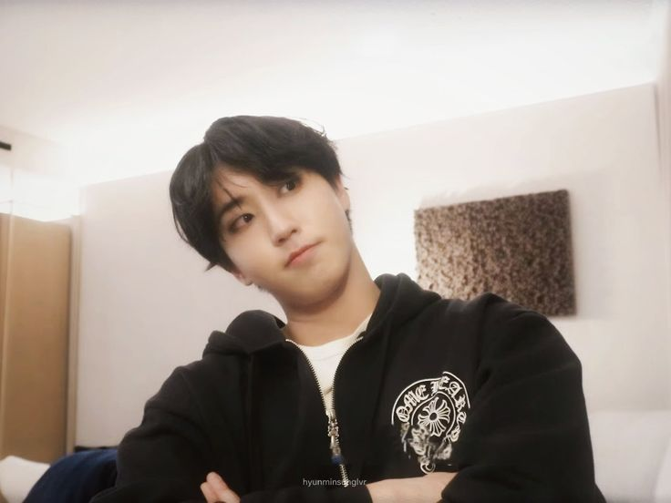
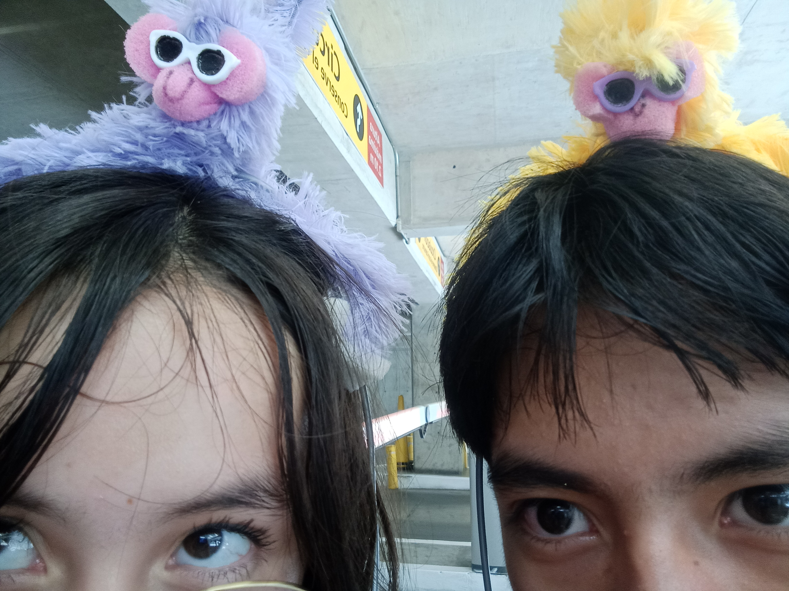

Ximena
Hola, soy Ximena y tengo 15 años, actualmete estudio en el CECyt No.3 y esta es la primera de una serie de páginas web en las
que estoy trabajando como parte de mi proyecto final de Computación Básica II. Asi que para iniciar les dejare una guía sobre mi y
para me conozcan un poco mejor :).

¿Quíen soy?
Mi nombre es Ximena Muñoz Franco, mi cumpleaños es el 11 de agosto, mis colores favoritos son el rosa, el
rojo y el verde, me considero una persona alegre, perseverante, soñadora y con muchas aspiraciones,
siempre trato de esforzarme en las cosas que hago, soy alguien muy dedicada.
Al principio puedo parecer muy seria, pero una vez que agarro confianza puedo ser muy rarita para las personas que consideran "normales".

Yooo
Mis gustos e intereses
- Comida Favorita
- Chilaquiles verdes
- Sushi
- Enchiladas verdes
- Mole
- Pasta
- Música y artistas favoritos
- Stray Kids (K-pop)
- Laufey (Jazz, Bossa Nova)
- Wave to Earth (Indie Rock surcoreano)
- Cuarteto de nos (Rock alternativo)
- Enhypen (K-pop)
- Sabrina Carpenter (Pop)
- Hoobies
- Bailar
- Escuchar música
- Natación
- Dibujar
- Hacer manualidades
- Canción favorita del momento
Hollow-Stray Kids

Amo mucho a Stray Kids
Sobre todo a mi bias Han Jisung

Tambien amo muuucho a mi novio

¿Que quiero hacer a futuro?
Cuando termine la prepa me gustaría estudiar Químico farmacéutico biólogo o Ingienería farmaceutica a nivel superior, el campo de
la ciencia siempre me ha interesado mucho y me gustaría estudiar eso. Se que no será facil pero estoy dispuesta a esforzareme para cumplir mis metas.
15 Datos curiosos de Xime
- Su personalidad esISFP
- Ama las películas de terror
- Dormir es su actividad favorita
- Tiene afición por las cosas miniaturas
- Le gusta mucho que le regalen cosas que le recuerden a ella
- Es una persona de hechos, no de palabras
- Tiene dificultad para expresar lo que siente
- No tiene preferencia entre perros o gatos, ama a los animalitos por igual
- Su sueño es viajar por el mundo
- Su juego favorito es Mario Kart
- Es muy cariñosa con las personas correctas
- Es una gigantesca otaku y fangirl pero trata de disimularlo
- Le gusta reír
- Cuando esta enojada, triste o se siente mal se queda callada
- Le gusta mucho Kirby
Eso fue un poco sobre mi, espero que les haya gustado mi página y vayan a ver las otras. Los quierooooo.